1摘要
一句话结论：二期不是简单给列表增加几个字段，而是同时补齐“录入治理”和“运行时隔离”两条链路。平台侧决定示例怎么建、怎么审；检索侧决定当前车辆最终能看到哪一套示例。任何一侧缺失，都会继续出现重复示例或跨范围污染。
录入前
对 Query 做语义查重，返回固定 Top N 相似条目。它是提醒，不是硬拦截；用户可以复用旧条目，也可以继续提交。
上线前
新增独立审批列表。普通提交人只看自己的记录，审核白名单可看全量并通过或驳回。
运行时
按车企/渠道、环境和舱域选中正确示例池。赛力斯至少分舱内与舱外两套；车型维度仍需专项确认。
1.1 v09 相对当前飞书 v1.1 的关键修正
| 主题 | 当前飞书 v1.1 | 建议回填 v1.2 | 依据状态 |
|---|---|---|---|
| 查重 | 目标写“重复示例零新增”，相似命中后提供取消、覆盖、仍要新增等操作 | 展示固定 Top N 相似条目，仅提醒；允许继续提交，不在相似列表直接覆盖多个 ID | 8/12 最终拍板 |
| 相似度设置 | 已提出语义匹配，但 Top N 与阈值的最终产品规则未写清 | 页面不暴露阈值；Top N 数量由系统配置，3 或 5 待定 | 方向已定 N 待定 |
| 查重范围 | 未区分管理侧查重范围与运行时召回范围 | 管理侧跨标签给出相似建议，方便复用同一条记录；运行时严格按生效范围过滤 | 8/12 最终拍板 |
| 草稿 | 目标链路和状态中仍保留草稿 | 不做草稿箱；提交后直接进入“待审核” | 会上明确无需求 |
| 导出权限 | 支持全量导出，但权限与审批方式未写清 | 白名单管理员直接导出；其他人无权限，不走 Leader 审批 | 8/12 已拍板 |
| 车企 | 已列入隔离范围，但未明确多选与通用规则 | 生效渠道/车企支持多选；通用示例一条记录可同时作用于多个车企 | 8/12 已拍板 |
| 环境 | 已列入隔离范围；评论确认当前按单一 PPE 测试后切 PROD | 保持单选；明确测试环境与 PROD 的可见语义 | 8/12 已拍板 |
| 舱内/舱外 | 未包含 | 赛力斯渠道下增加“舱内/舱外”两套动态示例 | 群聊新增 |
| 车型差异 | 未包含 | 新增风险与扩展位；是否做到车系/车型/配置款仍需专项会拍板 | 9/2 会议待定 |
2联系人及证据
2.1 关键协作人
| 人员 | 本需求中的角色 | 需要给出的结论或交付 |
|---|---|---|
| 王泽民 | 产品负责人、首批审核白名单 | PRD、范围拍板、验收结论 |
| 赵晓朝 | 算法协作、首批审核白名单 | 动态示例复用规则、审核口径 |
| 徐燃 | 服务端方案协作 | 审批记录、批量校验、权限配置可行性 |
| 樊文涛 | 平台/前端方案协作 | 列表、审批页、批量校验报告交互 |
| 李浩然 | 项目推进 | 排期与 Meego 跟踪 |
| 郝晓伟、李明骏 | 舱内/舱外架构口径补充人 | 两套动态示例的路由信号、范围和维护边界 |
| 单如水、牛超 | 车型差异风险发现/验证协作 | 可协助补充或验证 Case；正式负责人待确认 |
注：以上是会议中的协作角色，不替代组织内正式职责分工。
2.2 本版证据源
| 来源 | 本版采用内容 | 证据等级 |
|---|---|---|
| 2026-08-12《动态示例后台迭代需求对齐》逐字稿 | 查重、审批、导入、导出、车企标签、环境口径及最终反转结论 | 主依据 |
| 2026-09-02《上汽 D6X 车书 QA 异常问题排查会》逐字稿 | 车型/配置差异与动态示例可能冲突的风险；需另开专项会 | 风险依据 |
| 后续群聊截图 | 上层架构区分舱内/舱外；赛力斯渠道下维护两套动态示例 | 新增需求依据 |
| 飞书《planner 动态示例后台开发 PRD》v1.1 | 当前正文、版本记录、既有字段与评论口径 | 当前编辑基线 |
3背景
动态示例会被检索后注入 Planner 的 scenario_sample，直接影响 Planner 对用户请求的理解、工具选择和表达。平台一期已经能新增、编辑和删除，但维护人数增加、车企范围扩大后，暴露出三类问题。
重复内容挤占召回
相似 Query 被多人重复添加，多个近似条目会互相稀释排序，真正需要的示例可能进不了召回结果。
缺少批量治理
批量接口只能追加，缺少修改、删除、校验报告和离线修复闭环，无法支撑一批 Badcase 集中维护。
生效范围越来越复杂
上汽、赛力斯、不同环境、舱内/舱外以及未来车型配置差异，可能让同一个 Query 需要不同决策。
3.1 两条链路必须同时治理
| 链路 | 回答的问题 | 失败后果 |
|---|---|---|
| 管理链路 | 谁能添加？是否已有类似内容？谁来审核？怎么批量导入导出？ | 重复、脏数据、责任不清、维护低效 |
| 运行链路 | 当前车辆属于哪个车企、环境、舱内/舱外和车型范围？应从哪一套示例里召回？ | 上汽示例串到赛力斯、舱内示例串到舱外、车型能力与车书 QA 冲突 |
4目标与边界
4.1 目标
| 目标 | 可验收结果 |
|---|---|
| 减少重复示例 | 单条新增执行语义查重并展示 Top N；编辑、批量新增/更新的最终查重覆盖范围按 D02 拍板。 |
| 建立上线门槛 | 普通用户提交后不会直接进入线上召回；审批通过后才生效，驳回原因可回看。 |
| 跑通批量维护 | 固定模板可新增、更新、删除；上传后先校验、可导出报告、离线修改并重新上传。 |
| 让数据可取、可追溯 | 白名单可按范围导出全字段；操作记录包含提交人、审核人、时间和批次。 |
| 阻止跨范围污染 | 赛力斯舱内与舱外互不召回；跨车企冲突 Case 验证时，目标侧生效且基线侧不变化。 |
4.2 本期明确不做
- 不做 用户可见的相似度阈值配置。
- 不做 命中相似条目后强制禁止提交。
- 不做 “存为草稿”与草稿箱。
- 不做 批量报告页内直接编辑 Excel 内容。
- 不做 导出时再走 leader 审批。
- 不做 平台重复上传验证截图；验证证据继续放 Meego。
- 不做 首版飞书审批通知；先通过审批结果页查看。
- 暂不承诺 车系/车型/配置款完整分库。
5用户与价值
动态示例提交人
任务：遇到 Badcase 后，先知道库里有没有近似示例；能复用就改旧条目，确实不同才新增。
收益：减少重复劳动和误提交。
审核人
任务：在一个独立页面查看全量待审内容、相似条目和适用范围，给出通过或驳回结论。
收益：控制线上动态示例质量。
批量维护管理员
任务：处理一批评测或 Badcase，离线修正后批量导入，并能导出全量做 Review。
收益：把人肉逐条操作变成可校验的批量闭环。
研发与测试
任务：研发维护范围路由，测试用冲突 Case 验证不串车企、不串舱域。
收益：能判断到底是示例内容错，还是范围路由错。
6范围与建议优先级
| ID | 需求 | 建议优先级 | 状态 | 本期最小交付 |
|---|---|---|---|---|
| R01 | 单条添加语义查重提示 | 建议 P0 | 方向已拍板 | 提交时返回 Top N，展示 ID、Query、内容摘要和生效范围；不硬拦截。 |
| R02 | 独立审批列表与白名单 | 建议 P0 | 主流程已拍板 | 普通用户只看自己；审核白名单看全量；版本生效和自审待拍板。 |
| R03 | 批量导入、修改、删除与校验报告 | 建议 P0 | 主流程已拍板 | 固定模板、上传校验、报告导出、离线修改、重新上传；落库规则待拍板。 |
| R04 | 白名单全量导出 | 建议 P0 | 权限已拍板 | 固定全字段，不再发起 Leader 审批；“全量”定义待拍板。 |
| R05 | 车企多选 + 环境单选 | 建议 P0 | 方向已拍板 | 多车企与专属 PPE 的联动规则需二次评审。 |
| R06 | 赛力斯舱内/舱外两套示例 | 建议 P0 | 后续新增 | 字段名称、形态、适用车企和空池策略待拍板。 |
| R07 | 操作记录与审批记录 | 待评审 | 目标已确认 | 后端留痕必做；是否同步建设用户可见页面待确认。 |
| R08 | 车系/车型/配置款适用范围 | 不排期 | 待专项拍板 | 先保留扩展位，不在信号与继承规则未定时直接上线。 |
| R09 | 通用角色权限、通知、批次回滚 | 待拍板 | 当前 PRD 有回滚目标 | 不能静默移除回滚；需明确本期、后续或删除原目标。 |
优先级表示产品建议，不等于当前已排期。8 月 12 日会上提到的“下周晚些时候/月底”已是历史信息，需要项目重新确认。
7方案
7.1 生效范围模型
一条动态示例是否可被召回，由“生效范围”决定。平台必须把这些字段保存到条目，运行时必须拿到同样的上下文并过滤。
| 维度 | 字段形式 | 本期规则 | 状态 |
|---|---|---|---|
| 车企/渠道 | 多选标签 | 一条记录可作用于多个车企已确认；是否提供 ALL、ALL 是否与具体车企互斥、是否覆盖未来新增车企均待确认。 | 多选已拍板 ALL 为本版建议 |
| 环境 | 单选 | 保持现有单选方式。当前飞书评论口径：ppe_aidv_saic_dev 仅在该环境可见；切为 prod 后所有环境可见。赛力斯环境枚举及映射由研发补充。 | 上汽口径已确认 赛力斯映射待补 |
| 舱域（暂定名） | 单选 / 多选 / 通用值待确认 | 已确认赛力斯至少包含“舱内、舱外”两套；字段名称、形态、其他车企是否展示，以及能否跨域兜底均待拍板。 | 范围已新增 交互和空池策略待确认 |
| 车系/车型/配置款 | 预留，形态待定 | 只有确认上游能稳定提供路由标识、且适用继承规则明确后才开放。 | 待专项会 |
环境
赛力斯：舱内或舱外
其他车企舱域、车型标识待定
scenario_sample。图 1：运行时链路——先确定“在哪个池”，再在池内做相似召回。
7.2 管理侧查重与运行时检索必须分开
| 场景 | 查询范围 | 为什么 | 用户结果 |
|---|---|---|---|
| 录入/编辑时的查重 | 已确认不按车企标签缩小范围；是否跨环境、跨舱域及覆盖哪些记录状态归入 D02 | 如果旧条目只是缺少目标车企标签，直接扩展旧条目即可，不必重复新增。 | 展示 Top N；可去编辑旧 ID，也可继续提交当前条目。 |
| 运行时召回 | 严格限制在当前车企、环境、舱域的可见集合 | 防止上汽内容串到赛力斯、舱内内容串到舱外。 | 仅返回当前范围内的已上线示例。 |
正例与反例
正例：复用同一条通用规则
库里已有一条逻辑完全相同的示例，只标了“上汽”。添加赛力斯版本时，查重提示旧 ID；维护人确认内容通用后，把旧条目的车企标签扩展为“上汽 + 赛力斯”。
反例：把运行时也做成跨范围搜索
赛力斯舱外池没有结果，系统去全库搜索并拿到上汽舱内示例。即使相似度高，也属于范围污染，不能注入 Planner。
7.3 单条新增/编辑
图 2：单条提交——查重帮助人做决定，不替人做决定。
- 相似列表至少展示：ID、Query、决策分析摘要、车企/渠道、环境、舱域、状态、创建人。
- Top N 数量走系统配置，不在录入页面放用户可调阈值。
- 点击旧 ID 进入旧条目编辑；不在相似结果中设计“覆盖多个 ID”的复杂操作。
- 新增执行查重已确认；编辑同步查重为本版建议，最终按 D02。相似结果只提示，不阻止“继续提交”。
- 已上线条目的内容或生效范围发生变化后，应重新进入待审核。该规则列为本版建议，需在二次评审确认。
7.4 审批列表与权限
| 角色 | 可见范围 | 可执行动作 | 首版实现 |
|---|---|---|---|
| 普通提交人 | 只看自己提交的审批记录 | 查看结果、查看驳回原因、修改后重新提交 | 按提交人过滤 |
| 审核人 | 查看当前模块全量待审记录 | 通过、驳回、查看相似条目和生效范围 | TCC 白名单，首批王泽民、赵晓朝 |
| 批量管理员 | 批量导入/导出相关页面 | 上传、确认导入、导出全量 | 与首批审核白名单一致，后续可拆 |
图 3：审批状态——不需要草稿箱，但必须有待审核与结果记录。
7.5 批量导入、修改与删除
模板规则
| 操作类型 | ID | Query/内容 | 处理规则 |
|---|---|---|---|
| 新增 | 留空 | 必填 | 生成新 ID，执行相似提示。 |
| 更新 | 必填且存在 | 必填 | 按 ID 更新，执行相似提示并保留版本记录。 |
| 删除 | 必填且存在 | 可空 | 按 ID 删除，确认导入前明确展示影响条目。 |
图 4：批量维护——上传先校验，不在报告页内编辑。
- 固定模板字段：操作类型、ID、Query、决策分析、其他说明、车企/渠道、环境；若 R06 同期上线，再增加舱域列。车型范围字段暂不开放。
- 文件级错误（列缺失、模板版本错误、枚举表损坏）阻止整单继续。
- 行级错误（必填缺失、ID 不存在、枚举非法）在报告中逐行标红；存在阻塞错误时不能“确认导入”。
- 相似结果是黄色提醒，不算阻塞错误；备注展示 Top N 的 ID、Query 和范围。
- 校验结果使用独立全页，支持筛选和导出 Excel；不在页面内直接改内容。
- 报告导出可直接使用当前页面数据；无需为同一份报告再次请求一套导出数据。
- 确认导入属于白名单动作。确认后是否直接视为审批通过，见开放问题 D04。
7.6 全量导出
- 只有导出白名单用户可见/可用入口，首批为王泽民、赵晓朝。
- 导出不再发起 leader 审批；非白名单调用时返回明确“无导出权限”。
- 原始讨论已确认按车企/渠道、环境导出；舱域、状态是否纳入筛选为本版建议。
- 字段固定为全字段，不提供“选择导出字段”。
- 导出动作写日志：操作人、时间、筛选条件、条目数、文件结果。
7.7 列表与字段
| 字段 | 必填 | 规则 | 来源 |
|---|---|---|---|
| ID | 系统 | 唯一且稳定，外部 Meego 可引用。 | 一期已有 |
| Query | 是 | 用于管理侧相似提示和运行时召回。 | 一期已有 |
| 决策分析 | 是 | 给 Planner 的直接处理规则。 | 一期已有 |
| 其他说明 | 否 | Badcase 背景、限制、来源。 | 一期已有 |
| 车企/渠道 | 是 | 多选已确认；ALL、互斥及未来车企语义待拍板。 | 多选为 8/12 终局；其余为本版建议 |
| 环境 | 是 | 单选；枚举取现有环境配置。 | 8/12 已拍板 |
| 舱域（暂定名） | 条件必填 | 赛力斯至少为舱内/舱外；字段名、控件形态及其他车企显隐待定。 | 后续群聊确认范围；形态待拍板 |
| 车型适用范围 | 暂不开放 | 预留扩展位，不能在路由信号未定前使用。 | 9/2 待确认 |
| 线上版本状态 | 系统 | 未上线、已上线；已下线为本版建议，按 D03 决定。 | 已上线为现状；已下线待拍板 |
| 审批单状态 | 系统 | 待审核、已通过、已驳回。 | 8/12 审批需求 |
| 有待审版本 | 系统派生 | 当前有线上版本且同时存在待审修改时为是。 | 本版版本模型建议 |
| 提交人/审核人/驳回原因 | 系统/条件必填 | 驳回必须保留原因，提交人可见。 | 8/12 已讨论 |
| 批次号 | 批量时 | 关联一批导入记录和校验报告。 | 本版治理补齐 |
| 验证证据 | 不新增 | 继续放 Meego，不在平台重复上传截图。 | 8/12 已拍板 |
7.8 车型差异：当前只定义问题，不假装已有答案
近期约束
- 新增示例时避免把未核验的车型能力写成全局事实。
- 发现疑似冲突先核验配置表、QA 分库和当前车型，不直接删除动态示例。
- 座椅按摩 Case 不进入正式验收用例，直到车型配置被确认。
专项会需要决定
- 最终按车系、车型还是配置款维护。
- 上游能否稳定提供对应路由 ID。
- 通用条目和车型特例如何继承、覆盖。
- 动态示例与车型 QA 冲突时谁优先。
7.9 异常与边界
| 场景 | 产品处理 | 禁止行为 |
|---|---|---|
| 管理侧找到多条相似内容 | 展示约定 Top N 及范围；用户决定复用或新增。 | 不允许系统随机覆盖某个旧 ID。 |
| 批量文件有模板级错误 | 整单停止，指出错误列和模板版本。 | 不静默猜字段。 |
| 批量文件有行级错误 | 逐行标红；修复并重传后再确认导入。 | 不带错误做部分线上生效。 |
| 相似提示但内容确实不同 | 允许继续提交，并保留审批记录。 | 不做硬拦截。 |
| 运行时缺少舱域信号 | 返回空、兼容旧逻辑或走明确默认策略，必须二次评审三选一。 | 不允许在未拍板时跨舱内/舱外猜测。 |
| 目标范围示例池为空 | 返回空、兼容旧逻辑或使用明确默认池，必须在二次评审三选一；本版建议返回空并监控。 | 不允许在未拍板时静默跨车企或舱域兜底。 |
| 已上线条目修改适用范围 | 建议重新审批，避免无审扩散。 | 不静默扩大到更多车企或舱域。 |
| 车型 QA 与动态示例冲突 | 先确认当前车型配置和两侧来源，再决定改示例或路由。 | 不凭一个未确认 Case 下结论。 |
8页面级详细需求与高保真原型
本章是研发、设计和测试的主要实现依据。每张图都按“业务背景 → 页面入口 → 字段与按钮 → 状态变化 → 异常边界 → 验收重点”展开；图中的红框是本期新增或变化内容，图内编号与同一张图底部的同号说明一一对应；图外规则卡是完整业务补充。
8.1 ✅【建议 P0】动态示例管理列表改造
Meego：待创建，本稿不虚构需求单链接。
页面入口：Planner 管理 → 动态示例管理。
需求背景：现有列表缺少车企、舱内/舱外、审批版本等信息，维护人无法直接判断一条示例影响哪一范围，也无法区分线上正式版本与待审变更。
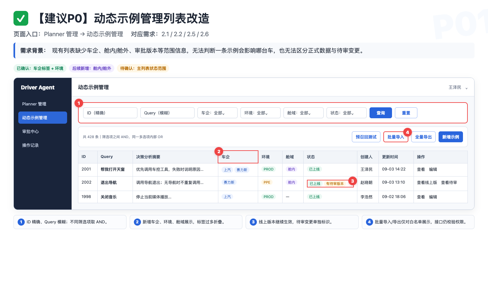
原型 P01｜列表新增范围筛选、作用域列、版本状态和白名单入口。点击图片查看原图。
8.2 ✅【建议 P0】新增 / 编辑动态示例
页面入口：动态示例管理 → 新增示例；列表 → 编辑。
需求背景：新增/编辑必须一次性把“内容”和“在哪些范围生效”说清楚，并在提交前发现无法解释的车企与环境组合。
| 字段 | 新增 | 编辑 | 校验和联动 |
|---|---|---|---|
| ID | 提交后生成 | 只读 | 用户不可修改；外部单据可引用。 |
| Query | 必填 | 必填 | 去首尾空格；变化后旧查重结果立即失效。 |
| 决策分析 | 必填 | 必填 | 长文本；变化后必须重新提交检查。 |
| 其他说明 | 选填 | 选填 | 记录背景、边界和来源。 |
| 车企/渠道 | 必填，多选 | 必填，多选 | 多选方向已确认；ALL、互斥和未来车企语义待拍板。 |
| 环境 | 必填，单选 | 必填，单选 | 测试环境仅该环境可见；prod 按当前口径为所选车企全环境可见。 |
| 舱域（暂定名） | 条件必填 | 条件必填 | 包含赛力斯时至少区分舱内/舱外；正式名称和控件形态待拍板。 |
| 来源单号 | 本版建议 | 本版建议 | 保存 Meego/Bug ID 或链接，不重复上传验证截图。 |
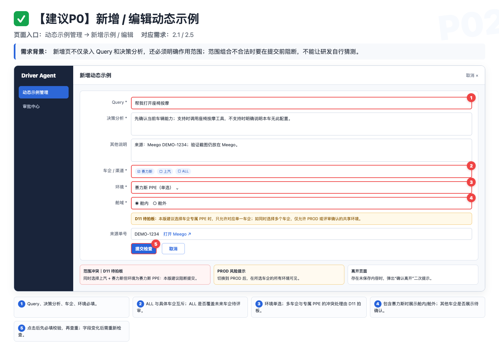
原型 P02｜表单补充车企、环境、舱域和联动错误示例。点击图片查看原图。
- 提交检查：先执行必填、长度、枚举和字段联动校验；全部通过后调用语义查重。
- 取消：无改动直接离开；有未保存内容时二次确认。
- 并发：编辑期间线上版本已变化时阻断保存，提示刷新后重新编辑。
- 查重失败：必须提示失败并允许重试，不能伪装成“没有相似项”；本版建议阻断继续提交，最终按 D02。
8.3 ✅【建议 P0】语义查重结果
触发入口：新增、编辑点击“提交检查”；批量导入进入校验报告。
需求背景：查重的目标是让人发现可复用条目，而不是用一个不透明阈值替用户做业务判断。
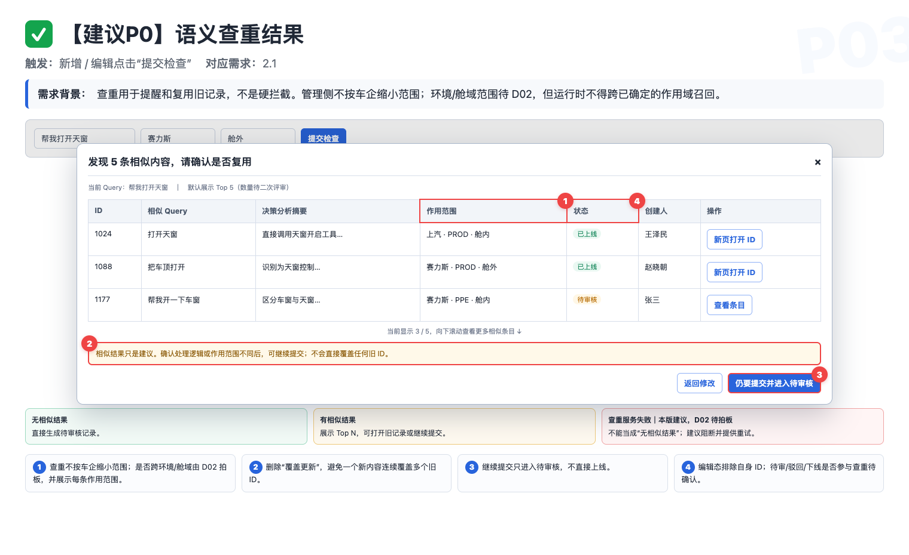
原型 P03｜Top N 只做提示，用户可复用旧条目、返回修改或仍要提交。点击图片查看原图。
| 状态 | 页面结果 | 能否继续 |
|---|---|---|
| 无相似结果 | 提示“未发现相似项”，生成待审核记录。 | 可以 |
| 有相似结果 | 展示 ID、Query、决策摘要、作用范围、状态、创建人和更新时间。 | 可以 |
| 查重失败 | 展示失败原因和重试入口。 | 本版建议不可以；最终按 D02 |
| 表单关键字段变化 | 旧结果标记失效，必须重新检查。 | 重新检查后可以 |
8.4 ✅【建议 P0】审批中心列表
页面入口：审批中心。
需求背景：审批记录不能混在动态示例正式列表里。提交人需要看到自己的结果，审核白名单需要处理全量待审内容。
| 用户 | 可见视图 | 数据范围 | 动作 |
|---|---|---|---|
| 普通提交人 | 我提交的 | 本人提交记录与结果 | 查看原因、修改后重提 |
| 审核白名单 | 待我审核 / 我提交的 / 全部记录 | 动态示例模块全量记录 | 单条通过、单条驳回、批量通过 |
| 无模块权限用户 | 无 | 无 | 服务端禁止访问 |
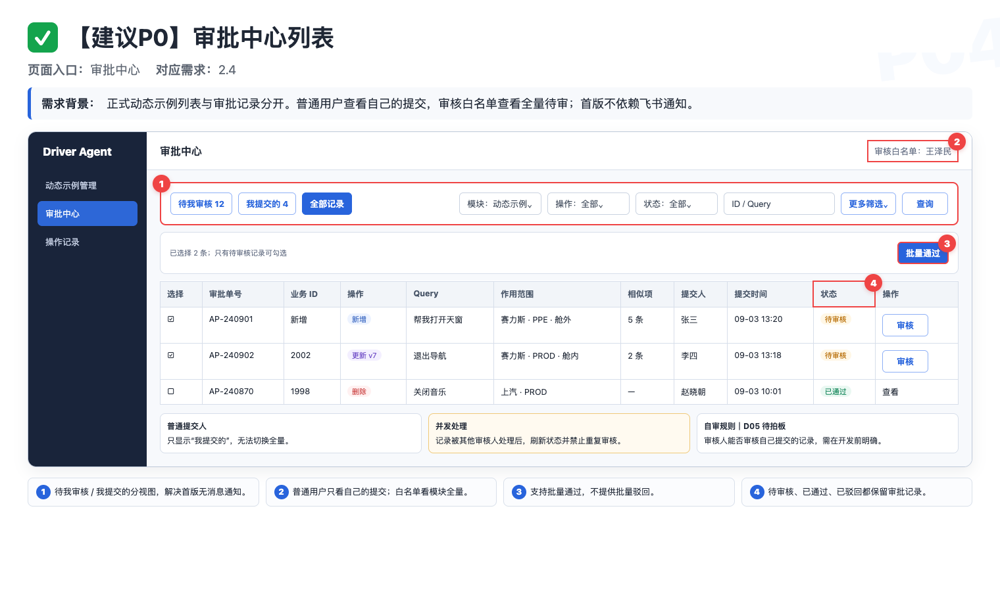
原型 P04｜审批中心区分“待我审核”和“我提交的”，并补充作用域、操作类型和批次信息。点击图片查看原图。
- 筛选包括模块、审批状态、操作类型、ID/Query、提交人、车企、环境、舱域、提交时间和批次号。
- 只有待审核记录可勾选；支持批量通过，不做批量驳回，因为驳回原因必须逐条填写。
- 审核人是否能处理自己提交的内容待拍板，未确认前页面需明确标记，不能默认放行。
- 记录被其他审核人处理时刷新状态并禁止重复审核；接口必须幂等。
- 任意一人通过还是多人会签按 D24；批量通过遇到并发失效项时如何处理按 D25。
8.5 ✅【建议 P0】审批详情、版本 Diff 与驳回
页面入口：审批中心 → 审核 / 查看。
需求背景：审核人需要看到提交时的固定快照、修改前后差异和适用范围，不能审核一份在过程中已被修改的数据。
| 操作类型 | 必须展示 | 审核后的状态 |
|---|---|---|
| 新增 | 完整内容、作用范围、相似示例、提交信息 | 通过后成为线上 v1；驳回后线上不可见。 |
| 更新 | 当前线上版本与待审版本左右 Diff，变化字段高亮 | 建议旧版继续生效；通过后新版本原子替换，驳回后旧版不变。 |
| 删除 | 原记录完整快照、作用范围、删除影响 | 物理删除、转已下线及待审期间是否继续生效均待拍板。 |
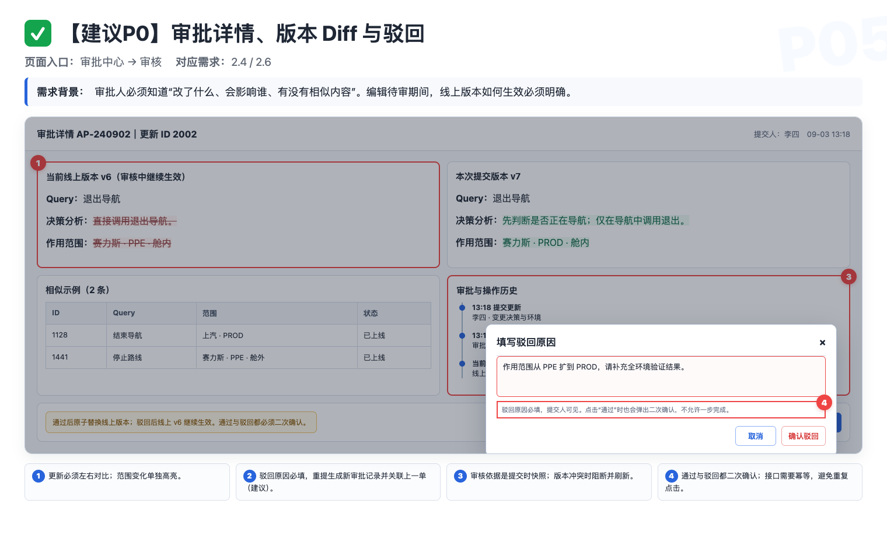
原型 P05｜更新审批左右对比线上版本与待审版本；驳回原因必填。点击图片查看原图。
- 通过前二次确认，并校验审批单仍为待审、线上基线版本未变化。
- 驳回原因必填且提交人可见；重提建议生成新审批单并关联上一单，不能覆盖历史。
- 出现并发版本冲突时阻断审批，提示刷新后重新审核。
8.6 ✅【建议 P0】批量导入入口与上传
页面入口：动态示例管理 → 批量导入。
权限：首批仅王泽民、赵晓朝。
流程：下载模板 → 上传文件 → 生成校验报告 → 确认导入 → 查看结果。
| 操作 | ID | Query / 内容 | 解释 |
|---|---|---|---|
| 新增 | 必须为空 | 必填 | 写入成功后生成新 ID。 |
| 更新 | 必填且存在 | 必填 | 按 ID 更新，查重时排除自身。 |
| 删除 | 必填且存在 | 可空 | 必须显式写“操作类型=删除”。 |
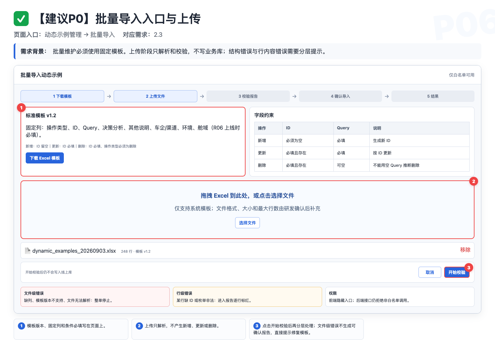
原型 P06｜固定模板、拖拽上传、解析状态与文件级错误提示。点击图片查看原图。
- 固定列：操作类型、ID、Query、决策分析、其他说明、车企/渠道、环境；若 R06 同期上线，再增加舱域列。禁止合并单元格。
- 上传阶段只解析、校验，不写入新增、更新或删除。
- 缺列、模板版本不支持、文件无法解析属于文件级错误，整单停止；某行必填缺失、ID 不存在、枚举非法属于行级错误。
- 文件类型、大小和最大行数沿用现网约束；若无现网约束，由研发给出后回填，不在 PRD 擅自写数字。
8.7 ✅【建议 P0】批量校验报告
页面入口：批量导入 → 校验完成。独立全页为本版交互建议，会议尚未在弹窗与全页之间拍板，见 D28。
需求背景：校验报告既要告诉维护人“哪里错”，也要把相似提醒与阻塞错误分开，支持离线修正后重新上传。
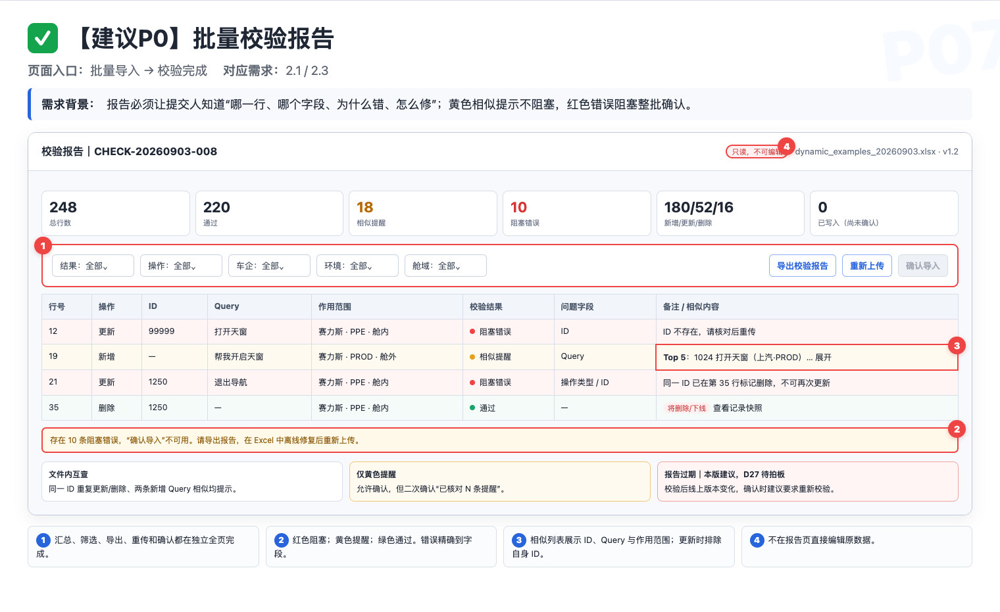
原型 P07｜汇总卡、筛选、逐行错误、相似提示、报告导出和确认按钮条件。点击图片查看原图。
8.8 ✅【建议 P0】确认导入与结果页
页面入口：校验无阻塞错误 → 确认导入。
需求背景：真正写库发生在“确认导入”，此前上传与校验都不能改变线上数据。
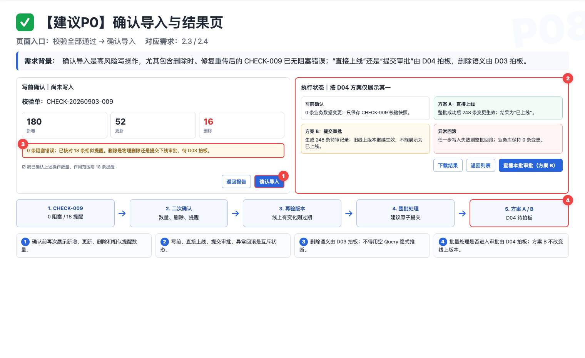
原型 P08｜写库前二次确认、执行状态以及成功/失败结果反馈。点击图片查看原图。
8.9 ✅【建议 P0】全量导出
页面入口：动态示例管理 → 全量导出。
权限：首批仅王泽民、赵晓朝；不走 Leader 审批。
需求背景：会议已确认白名单可直接导出，但“全量”究竟指筛选结果还是全库仍未定义。
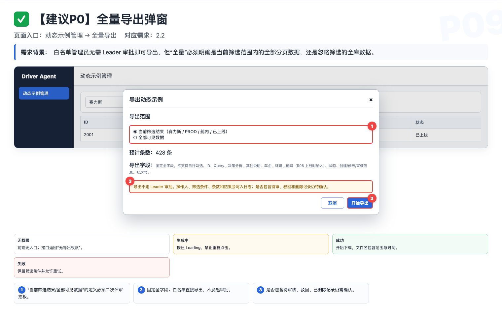
原型 P09｜导出范围二选一、固定全字段、数据量预览与白名单权限说明。点击图片查看原图。
| 范围选项 | 精确定义 | 待确认点 |
|---|---|---|
| 当前筛选结果 | 导出满足当前筛选条件的全部分页数据，不只当前页。 | 是否作为默认选项。 |
| 全部可见数据 | 忽略列表筛选，导出当前账号权限可见的全部数据。 | 是否包含待审、驳回和已下线记录。 |
- 固定全字段，不提供字段选择器；若 R06 同期上线则纳入舱域。ALL 是否展开为多行待确认，建议保留原值。
- 导出中按钮 Loading；失败时保留范围和筛选条件并允许重试；无数据时给明确提示。
- 日志记录操作人、时间、筛选条件、条目数和结果；非白名单接口调用明确拒绝。
8.10【建议范围】操作记录与批次详情
页面入口：动态示例详情 → 操作记录；批次号 → 批次详情。
需求背景：责任可追溯目标已确认，但本期是否必须建设用户可见页面仍待确认。即使页面后置，后端字段与快照仍需留存。
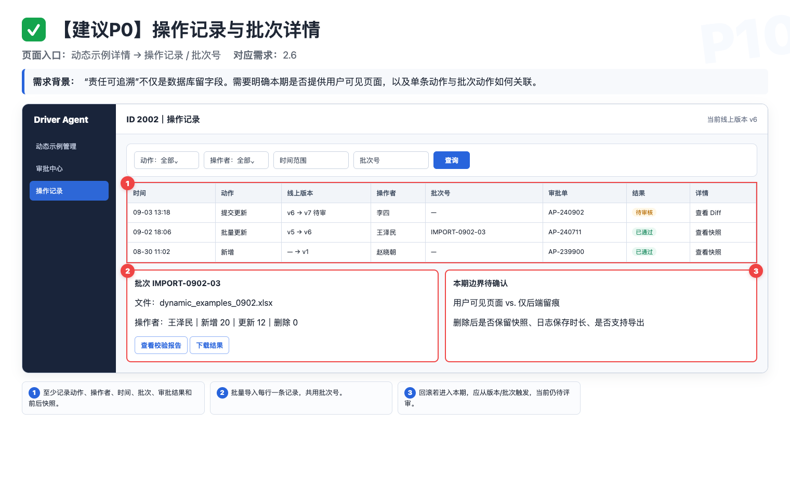
原型 P10｜按数据、动作、人员和批次检索；支持单条 Diff 与批次级追溯。点击图片查看原图。
8.11【后续新增】车企 × 环境 × 舱内/舱外隔离
适用链路：运行时动态示例召回。
需求背景：后续明确赛力斯渠道要区分舱内和舱外两套动态示例。平台保存范围字段只是第一步，检索注入侧必须使用同样的上下文过滤。
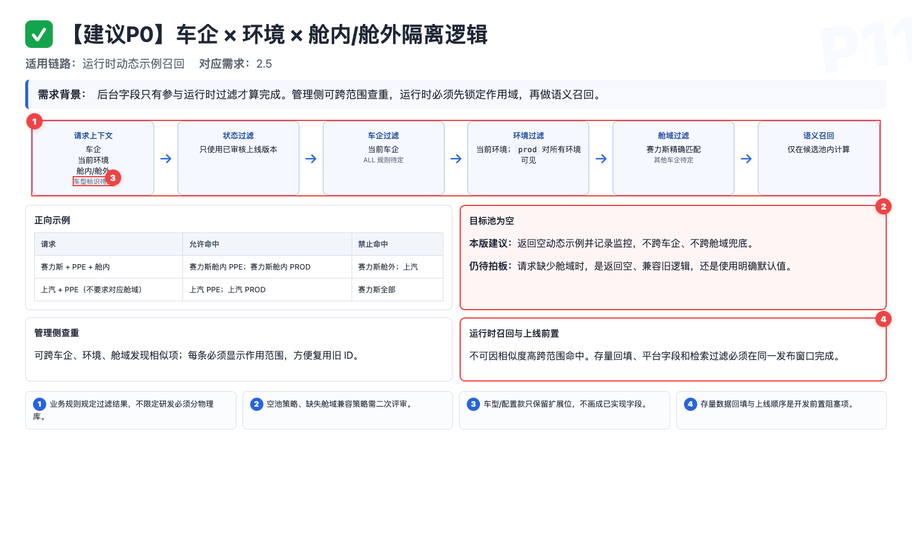
原型 P11｜先选正确候选池，再做语义召回；平台、检索、迁移和监控必须成套交付。点击图片查看原图。
| 请求 | 允许命中 | 禁止命中 |
|---|---|---|
| 赛力斯 + PPE + 舱内 | 赛力斯舱内 PPE；赛力斯舱内 PROD | 赛力斯舱外；上汽全部 |
| 赛力斯 + PPE + 舱外 | 赛力斯舱外 PPE；赛力斯舱外 PROD | 赛力斯舱内；上汽全部 |
| 上汽 + PPE | 上汽对应 PPE；上汽 PROD；是否还按舱域过滤由 D13 决定 | 赛力斯全部 |
上线前置条件【本版建议】
- 确认上游稳定提供的车企、环境、舱域字段与枚举；
- 研发完成存量回填或兼容规则；
- 平台字段保存与运行时过滤共同上线；
- 用安全、可逆、结果明显的冲突 Case 做车企与舱域隔离验收；
- 监控缺失路由、非法枚举、空池和疑似跨池命中。
9发布、验收与待拍板项
9.1 建议发布拆分
第 1 批：管理闭环
R01–R04、R07：相似提示、审批列表、批量导入/导出、操作记录。
交付后先解决重复录入和人工批量维护问题。
第 2 批：范围隔离
R05–R06：车企/渠道、环境、赛力斯舱内/舱外及运行时过滤。
必须平台与检索侧共同上线，不能只发一个字段。
专项设计：车型差异
R08：先确认路由信号和继承规则，再决定是否进入开发。
不沿用 8 月的历史排期，重新由项目给出相对周期。
9.2 验收用例
| ID | 验收动作 | 预期 | 责任边界 |
|---|---|---|---|
| A01 | 单条提交一个与库内语义相近的 Query | 展示 Top N；可打开旧 ID，也可继续提交，不被硬拦截。 | 产品定义 Case，研发提供环境，测试执行。 |
| A02 | 相似旧条目属于另一车企标签 | 管理侧仍提示并展示范围；运行时不会因此跨车企召回。 | 管理/运行两条链路分别验收。 |
| A03 | 普通用户提交一条新示例 | 进入待审核，线上检索不到；审核通过后才可召回。 | 审核白名单执行审批。 |
| A04 | 驳回一条提交 | 提交人能在自己的审批记录中看到原因，修改后可重提。 | 首版不要求飞书通知。 |
| A05 | 批量上传含新增、更新、删除的模板 | 上传阶段不写库；报告能区分错误与相似提醒。 | 白名单管理员操作。 |
| A06 | 文件中存在 Query 为空但未标删除的行 | 报必填错误，不执行删除。 | 需先拍板 D03。 |
| A07 | 导出校验报告、离线修复并重新上传 | 报告字段完整，可筛选；修复后通过并可确认导入。 | 前端导出页面数据。 |
| A08 | 非白名单尝试全量导出 | 入口不可用或明确提示无权限；白名单可直接导出，无 leader 审批。 | 权限配置由研发维护。 |
| A09 | 同一通用条目标记上汽 + 赛力斯 | 只维护一条 ID；两边在各自有效范围内可召回。 | 需确认内容确实通用。 |
| A10 | 在赛力斯舱内配置安全、可逆且结果明显的冲突示例 | 赛力斯舱内得到结果 A；赛力斯舱外保持基线 B。 | 产品出 Case，研发配置，测试验证。 |
| A11 | 同一冲突示例验证上汽目标环境 | 上汽保持基线 B，不出现赛力斯结果 A。 | 证明没有跨车企泄漏。 |
| A12 | 目标车企/舱域示例池为空 | 按二次评审确认的空池策略处理；若采纳本版建议，则返回空并记录监控。 | 决策依赖型验收。 |
| A13 | 同时选择上汽、赛力斯，环境选择赛力斯 PPE | 若采纳本版联动建议，提交前阻断并提示改为单车企或 PROD/共享环境。 | 决策依赖型验收。 |
| A14 | 查重接口超时或失败 | 页面明确失败并提供重试，不能伪装成“无相似结果”；若 D02 采纳本版建议，则阻断继续提交。 | 决策依赖型验收。 |
| A15 | 编辑已上线 v6 并提交 v7 | 若采纳版本模型，审批期间继续读取 v6；通过后原子切换到 v7。 | 审批与检索联合验收。 |
| A16 | 待审 v7 被驳回后查询同一 Query | 线上仍命中 v6；提交人能看到驳回原因并重提。 | 审批版本验收。 |
| A17 | 批量文件缺少整列“操作类型” | 文件级失败，整单停止，不生成可确认报告。 | 批量解析验收。 |
| A18 | 同一文件中同一 ID 同时更新和删除 | 若 D27 采纳文件内互查建议，则报阻塞错误并同时指出冲突行号。 | 决策依赖型验收。 |
| A19 | 校验通过后目标 ID 被其他人修改 | 若 D27 采纳校验快照建议，则确认导入时提示报告过期并要求重新校验。 | 决策依赖型验收。 |
| A20 | 批量写入中发生服务端失败 | 按最终事务策略处理；若采纳原子方案，则整批回滚并在结果页说明。 | 决策依赖型验收。 |
| A21 | 导出当前筛选结果 | 导出全部分页数据而非当前页；是否同时保留全库导出按评审结论。 | 导出范围验收。 |
| A22 | 环境为 prod 的赛力斯舱内示例 | 若 D16 确认赛力斯沿用现有 PROD 语义，则在赛力斯各环境可见，但不进入赛力斯舱外或上汽。 | 决策依赖型验收。 |
| A23 | 非白名单直接调用批量导入接口 | 后端拒绝并记录权限错误。 | 不能只测前端入口。 |
| A24 | 存量记录没有舱域值 | 按迁移方案处理，不允许上线后出现全量召回为空或跨池污染。 | 上线前迁移验收。 |
| A25 | 两名审核白名单对同一审批单先后操作 | 按 D24 的单人/多人审批规则只产生一个有效结论，一人驳回后的终态清楚。 | 审批状态机验收。 |
| A26 | 批量通过时其中一条已被其他人处理 | 按 D25 的事务规则处理剩余条目，页面明确列出成功、失效和未处理项。 | 并发批量审批验收。 |
| A27 | 审批功能上线前抽取一条既有线上记录 | 按 D26 初始化线上 v1，不要求重新审批且召回不中断；迁移审批记录按最终方案。 | 存量版本迁移验收。 |
9.3 隔离验收记录模板
| Query | 目标车企 | 环境 | 舱域 | 原基线 | 目标结果 | 配置人 | 验证人 | 实际结果 | 结论 |
|---|---|---|---|---|---|---|---|---|---|
| 待选择安全冲突 Case | 赛力斯 | 待定 | 舱内 | B | A | 研发/平台 | 测试 | 待填 | 通过 / 失败 / 证据不足 |
| 同一 Query | 赛力斯 | 同上 | 舱外 | B | B | — | 测试 | 待填 | 通过 / 失败 / 证据不足 |
| 同一 Query | 上汽 | 尽量同级环境 | 如上汽采用舱域则填对应值，否则 — | B | B | — | 测试 | 待填 | 通过 / 失败 / 证据不足 |
9.4 二次评审必须拍板
- D01｜Top N 数量：单条和批量统一取 3 条还是 5 条？建议默认 5，后台可配，页面不暴露阈值。
- D02｜查重范围与失败策略：单条编辑、批量新增/更新是否全部查重？除车企外是否跨环境、跨舱域？待审核、已驳回、已下线是否参与？完全相同 Query 是否仍只提示？失败时是否阻断？
- D03｜删除语义：是否接受“操作类型=删除”作为唯一删除标识？删除最终是物理删除、转已下线，还是提交删除审批？
- D04｜批量导入与审批：确认导入是否等同审批通过？若进入审批，是整批一单还是每行一单？
- D05｜审核自审：审核人能否审核自己提交的内容？
- D06｜审批版本模型：已上线条目修改或申请删除期间，旧版本是否继续生效？本版建议继续生效，直到新版本通过。
- D07｜修改再审：修改 Query、决策分析或扩大作用范围后是否强制重新审批？建议强制。
- D08｜批量事务：整批原子成功/失败，还是允许部分成功？建议原子提交。
- D09｜批次与报告：校验单号、正式批次号分别何时生成？报告保存多久？
- D10｜导出“全量”定义：当前筛选结果的全部分页数据，还是忽略筛选导出全库？是否包含待审、驳回、已删除数据？
- D11｜车企与环境联动：是否采纳“专属 PPE 只能选对应单一车企；多车企只能选 PROD/共享环境”？
- D12｜ALL 语义：是否需要 ALL？是否与具体车企互斥？是否自动覆盖未来新增车企？
- D13｜舱域字段：正式名称是什么？单选、多选还是允许通用？只对赛力斯展示还是所有车企必填？
- D14｜空池与缺失路由：目标池为空、请求缺少舱域或值非法时，返回空、兼容旧逻辑还是使用默认值？
- D15｜上层路由信号：舱内/舱外给平台和检索侧的稳定标识及枚举是什么？由郝晓伟、李明骏补充。
- D16｜赛力斯环境枚举：有哪些测试环境？切到 PROD 后是否沿用“所有环境可见”？
- D17｜作用域存量迁移：现有记录如何补车企和舱域，空值过渡期如何处理，前端、检索和迁移按什么顺序上线？
- D18｜操作记录页面：本期只做后端留痕，还是同步做用户可见的日志和批次详情？
- D19｜批次回滚：当前飞书 v1.1 目标仍写“可回滚”。本期做、后续做，还是同步删除原目标？
- D20｜创建与编辑权限：谁能新增？普通用户能否编辑别人创建或已上线的记录？
- D21｜车型粒度：按车系、车型还是配置款隔离？上游是否有稳定 ID？通用规则和车型特例如何继承？
- D22｜冲突优先级：车型 QA 明确“本车无此配置”时，是否覆盖通用动态示例中的能力描述？
- D23｜审批平台化：何时把 TCC 白名单升级为 Trigger、Agent 也可复用的角色权限与审批中心？
- D24｜审批通过机制：任意一名白名单审核人通过即生效，还是需要两人都通过？一人驳回后是否立即终止审批？
- D25｜批量审批并发：批量通过时若部分记录已被处理，剩余记录继续处理还是整批停止？
- D26｜审批版本存量迁移：既有线上记录是否统一初始化为线上 v1？是否补生成迁移审批单？切换期间如何保证召回不中断？
- D27｜批量文件内冲突与校验快照：同一文件的重复 ID 操作如何阻塞？确认导入前是否必须比较线上版本并让旧报告过期？
- D28｜校验报告承载形态：采用独立全页还是弹窗？本版原型建议全页，以支持百行级筛选和报告导出。
9.5 需求追溯
| 需求 | 原始讨论位置 | 本版处理 |
|---|---|---|
| 相似提示而非硬拦截 | 8/12 00:46:32–00:50:36 | R01、7.2、7.3 |
| 审批白名单与独立审批记录 | 8/12 00:11:42–00:20:40 | R02、7.4 |
| 导出仅限白名单、无需 leader 审批 | 8/12 00:20:47–00:22:51 | R04、7.6 |
| 车企标签多选、环境单选 | 8/12 00:22:51–00:30:22 | R05、7.1 |
| 批量导入、校验报告、离线修改 | 8/12 00:30:27–00:41:42 | R03、7.5 |
| 不在平台重复放验证截图 | 8/12 00:52:09–00:53:25 | 4.2 非目标、字段表 |
| 赛力斯舱内/舱外两套示例 | 后续群聊截图 | R06、7.1、A10–A12 |
| 车型/配置差异风险 | 9/2 00:01:22–00:10:27 | R08、7.8、D21–D22 |
本页填完并将确认结果回填飞书后，v1.2 才可从“待二次评审”升级为“已确认需求”。
结论 / 日期
结论 / 日期
结论 / 日期
结论 / 日期